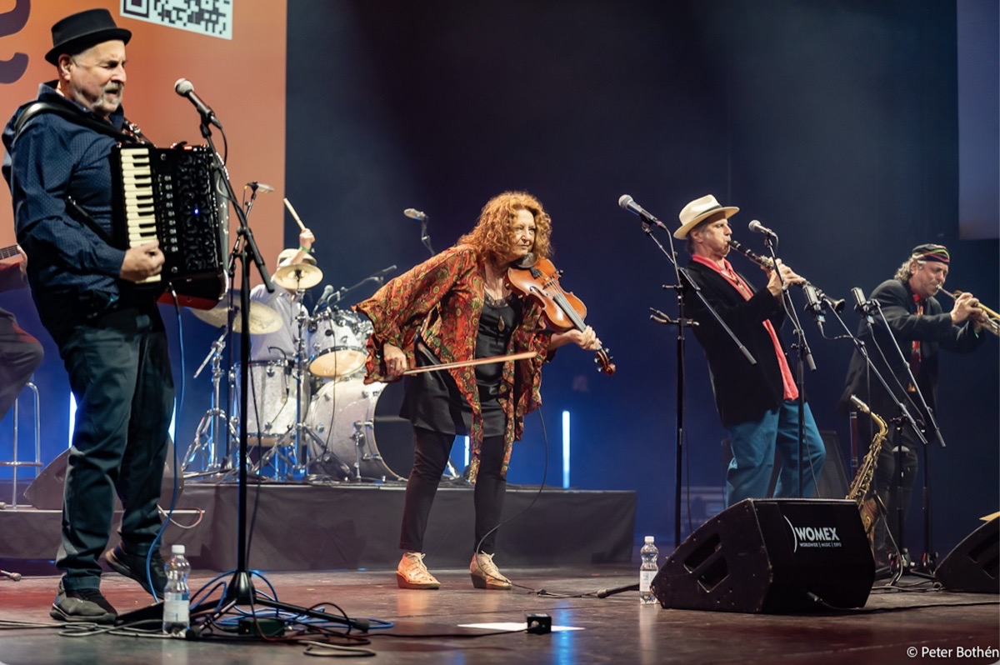

Klez Fest Midwest
Madison, Wisconsin
October 22–25, 2026

Featuring:
The Klezmatics
Saturday, October 24 · 2:00 PM
Mead Witter Foundation Concert Hall
Hamel Music Center, Mead Witter School of Music
University of Wisconsin–Madison
740 University Avenue, Madison, WI
This concert is FREE and open to the public.
At a Glance
Thursday, October 22
7:00 PM
Local band Tsuzamen and Chicago’s Fugu Dugu
Indie klezmer (Tsuzamen) and Balkan brass/klezmer soul/gypsy fire punk (Fugu Dugu).
North Street Cabaret
610 North Street
FREE
Read more →Friday, October 23
7:30 PM
SoundWaves: Music and Science Together
A Wisconsin Science Festival event. UW–Madison faculty explore the theme of “Origins” from a variety of perspectives in 15-minute talks directed at the lay audience, and The Klezmatics speak about the origins of klezmer and perform songs from their 40-year repertoire.
Collins Recital Hall
Hamel Music Center, 740 University Ave
FREE but registration required here
Read more →Saturday, October 24
11:00 AM
Children’s Concert with Elm Duo
Klezmer for the whole family.
Lee/Kaufman Rehearsal Hall
Hamel Music Center, 740 University Ave
FREE
Read more →2:00 PM
Showcase Concert with The Klezmatics
Mead Witter Foundation Concert Hall
Hamel Music Center, 740 University Ave
FREE
Read more →7:00 PM
Dan’s World Music Fest
Dance party fundraiser for WORT celebrating world music DJ Dan Talmo, with Szászka (Hungarian/Transylvanian dance music), LuLu Quintet (French/Romany jazz) and Yid Vicious (Klezmer).
East Side Club
3735 Monona Dr
$20 Donation to WORT-FM
Read more →Sunday, October 25
4:00 PM
Nigunim Trio
The Klezmatics’ Lorin Sklamberg (vocals/accordion) and Frank London (trumpet/keyboard) with pianist Rob Schwimmer in a program of Yiddish Hasidic spiritual songs.
North Street Cabaret
610 North Street
FREE
Read more →About Klez Fest Midwest
Klez Fest Midwest (KFMW) is an annual music festival in Madison, Wisconsin, presenting great klezmer music as a living and evolving creative tradition. Launched in 2024 at the Mead Witter School of Music at the University of Wisconsin–Madison, the main festival takes place in the fall, with occasional events at other times of the year. Past performers have included Alicia Svigals (2024 headliner, the “queen of the klezmer violin”), clarinet superstar David Krakauer (2025 headliner), Laura Elkeslassy, Donald Sosin, and Kathleen Tagg, with band members including Aaron Alexander, Jim Guttman, Curtis Hasselbring, Jordan Hirsch, Will Holshouser, Michael Sarin, Ilya Shneyveys, and Leo Traversa. Klez Fest Midwest has also proudly presented Madison groups Yid Vicious, Kanopy Dance, Elm Duo, and Tsuzamen. In 2026, we are excited to welcome our headliners The Klezmatics, along with Fugu Dugu, the Nigunim Trio, and returning performers Yid Vicious, Tsuzamen and Elm Duo. Past KFMW events have included masterclasses, a dance performance, a film with live music, and a children’s concert.
What is Klezmer?
“Klezmer is the instrumental music of the East European Ashkenazic Yiddish-speaking Jews who lived in the Pale of Settlement from north to south, from all the way up in Lithuania to down in Romania … and the music that was derived when those people left that area of diaspora and went into their further diasporas in Latin America, in North America, in Israel, and other countries.”
For centuries, klezmer musicians performed music for dancing and celebrating at parties, weddings, and other events. The music itself is highly emotional: most klezmer songs manage to express both happiness and sadness, often at the same time. Drawing on Jewish cantorial traditions as well as the folk music of neighboring cultures in Poland, Ukraine, Romania, Moldova, Belarus, Lithuania, and Hungary, klezmer developed a distinctive style rich in expressive ornamentation, dance rhythms, and improvisation. Brought around the world by Jewish immigrants in the late 19th and early 20th centuries, klezmer flourished in immigrant communities, declined after World War II, and experienced a vibrant revival beginning in the 1970s. Today it is performed, reimagined, and reinterpreted by musicians around the world while remaining deeply connected to its Eastern European Jewish roots. With influences as wide-ranging as hip hop, Romani sounds, funk, and Hasidic cantorial traditions, the music always retains its original identity while continually evolving.
Sponsors


Contact Us
Questions, comments, or want to get involved? Email us at klezfestmidwest@gmail.com.